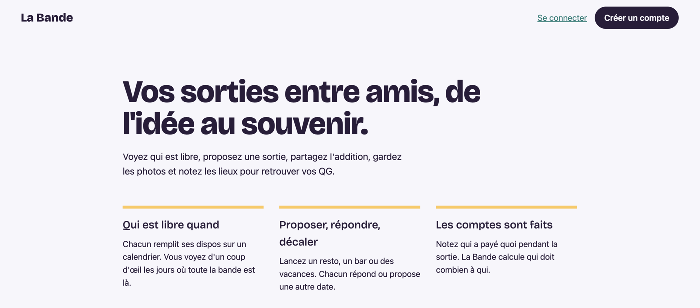
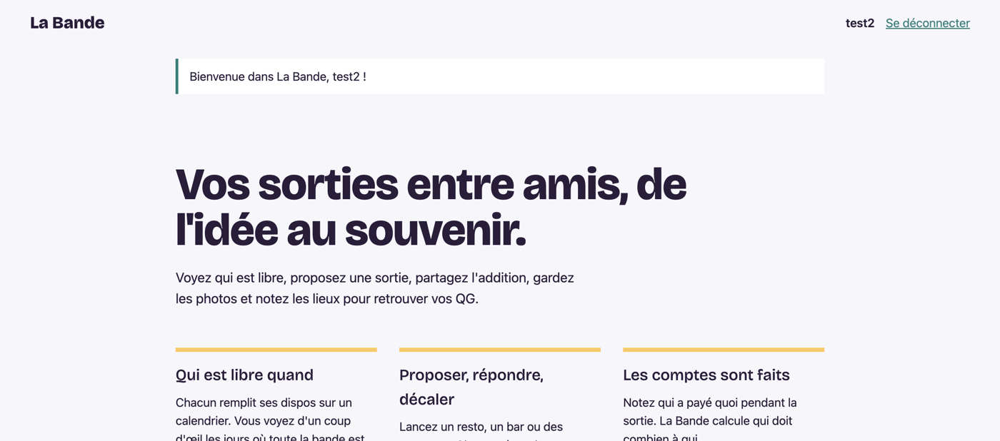
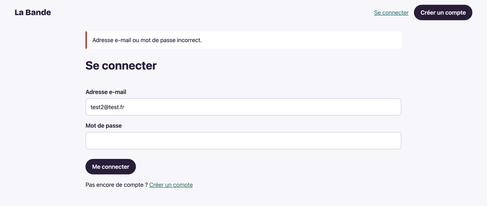

Vos sorties entre amis, de l'idée au souvenir.
Un groupe WhatsApp pour proposer, un sondage pour la date, Tricount pour les comptes, un album partagé pour les photos… et personne ne se souvient du nom du bar d'il y a six mois. La Bande réunit tout ça au même endroit.
Ce que fait La Bande
Qui est libre quand
Chacun remplit ses dispos sur un calendrier. On voit d'un coup d'œil les jours où toute la bande est là.
Proposer, répondre, décaler
Un resto, un bar, des vacances : chacun répond ou propose une autre date.
Les comptes sont faits
On note qui a payé quoi pendant la sortie. La Bande calcule qui doit combien à qui.
L'album de chaque sortie
Tout le monde ajoute ses photos au même endroit, rangées par sortie.
La carte de vos QG
Chaque lieu visité est sur la carte, noté par la bande : QG, à refaire, bof ou à éviter.
Déjà disponible : les comptes
La première version (v1.0.0) pose les fondations : la page d'accueil et les comptes utilisateurs, avec des mots de passe chiffrés et des formulaires protégés.



La suite
- Lot 0 Squelette du projet
- Lot 1 Comptes utilisateurs
- Lot 2 Groupes et codes d'invitation
- Lot 3 Calendrier des dispos
- Lot 4 Sorties
- Lot 5 Dépenses partagées
- Lot 6 Carte et notes des lieux
- Lot 7 Album photo
Comment le projet est construit
Le code est développé sur Replit, relu sur ordinateur avec Claude Code, puis versionné sur GitHub. Chaque fonctionnalité vit sur sa propre branche et rejoint la version principale par une pull request. À chaque modification, GitHub Actions lance les tests automatiquement et met cette page à jour.